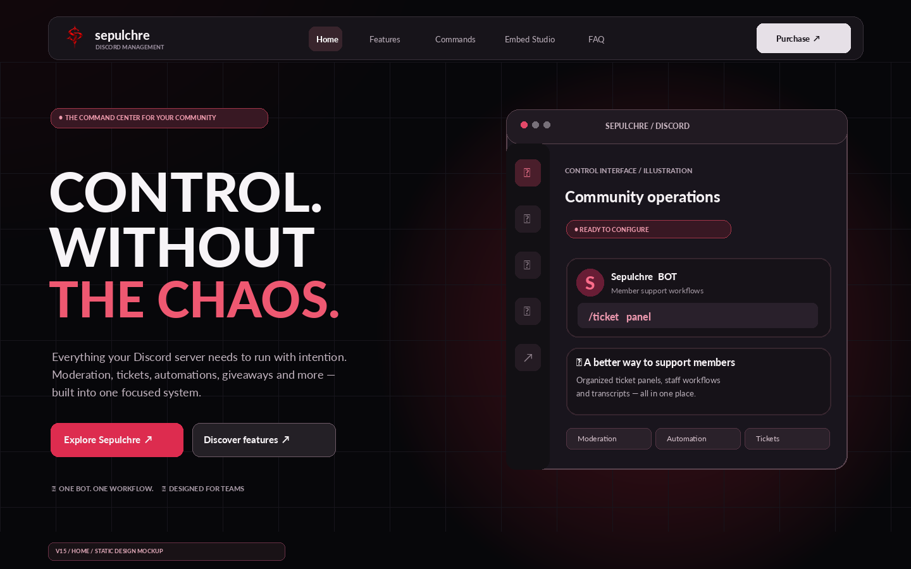
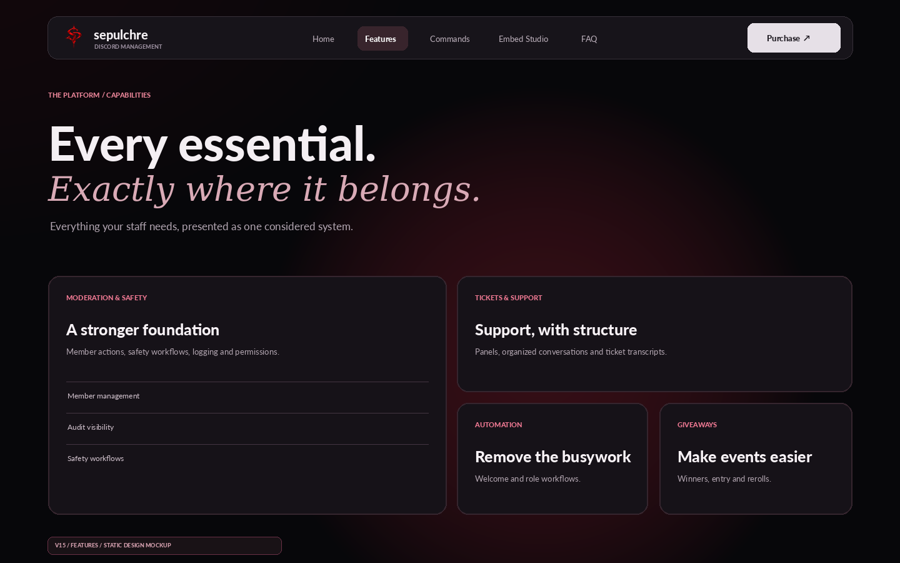
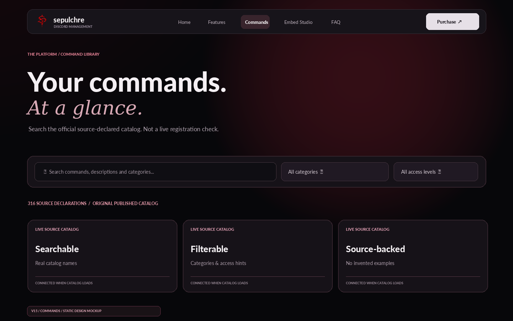
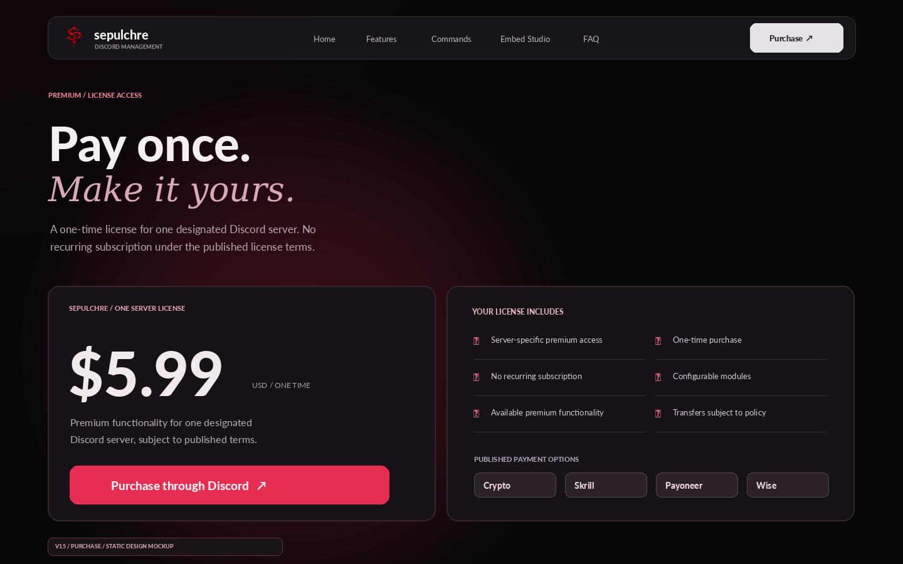
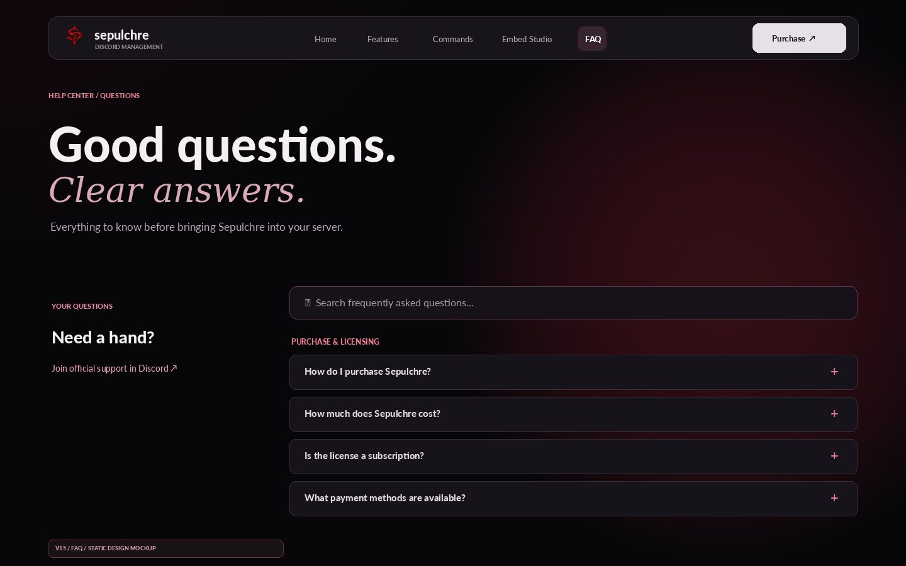
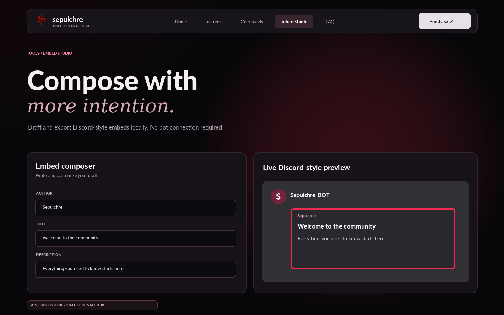
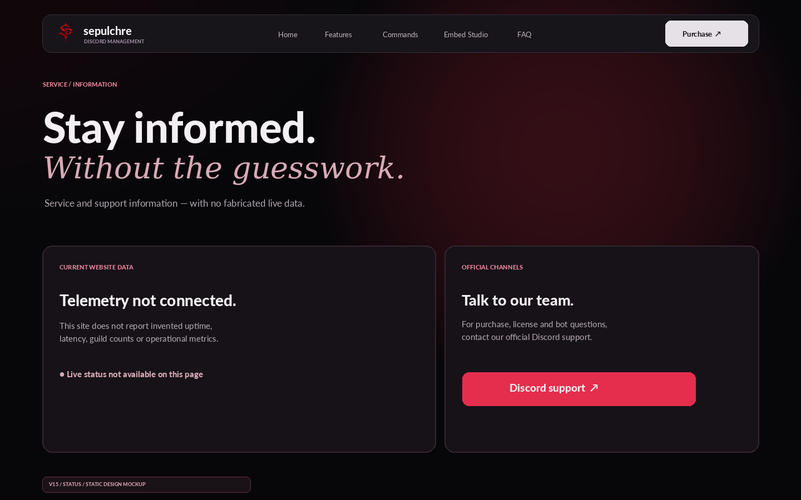
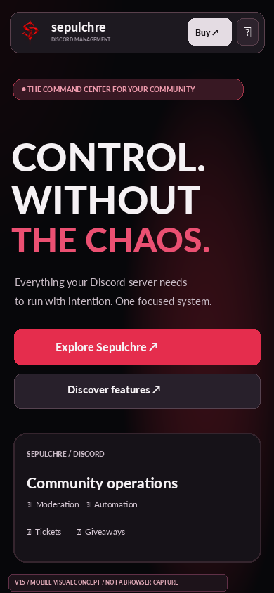

SEPULCHRE / V15
Visual direction.
These are hand-composed, static layout concepts for the included HTML pages, not browser screenshots. The HTML/CSS/JS files are the actual website. In this environment Chromium blocked local page navigation, so visual browser verification must be performed after opening the site on your own computer or GitHub Pages.







